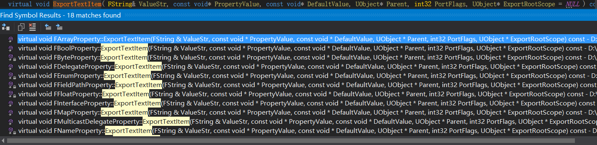

# 反射系统 API 简单解析和使用
前言：本篇主要总结部分利用 ue 反射系统实现的好用的 API 的简单解析和使用，个人建议还是要学一学 UObject 的反射系统。毕竟磨刀不误砍柴工，了解底层往往决定着我们能走多远。
反射系统：UClass 的诞生与成长
# GetObjectsOfClass()
# 源码实现：


# 解析：
- 图一可知 GetObjectsOfClass () 函数体里面 只执行了 ForEachObjectOfClass ()，和 check 数量是否正确。
- ForEachObjectOfClass () 实际上是让这个类的所有对象都执行一个函数
- 图二可知 ForEachObjectOfClass () 先获得 ObjectHashTable 然后调用 RecursivelyPopulateDerivedClasses () 和 ForEachObjectOfClasses_Implementation ()
- 图三可知 RecursivelyPopulateDerivedClasses () 通过遍历把所有该 UClass 的子 UClass 都存到了 OutAllDerivedClass 数组里面，其中 ClassToChildListMap 是类和其所有子类的映射的 TMap
- 图四可知 ForEachObjectOfClasses_Implementation () 通过遍历所有子类的对象，并通过 Flag 来筛选掉不需要的对象，合适的对象直接调用 Operation () 函数将其加入到 Results 数组里面。值得注意的是，有后面两个标记的 Object 是会被直接筛掉的
- 这样一来 就完成了获取该类的所有符合要求的对象的操作，主要还是利用了 ObjectHashTables 里面的映射关系，而这个映射关系正是通过反射获得的。
# 使用方法：
1 | TArray<UObject*> Results; |
# FindObject()
# 源码实现：


# 解析：
- 这个追根溯源实在是太长了，所以这里只放了最后一步的源码。
- 图 2 可以看出，StaticFindObjectFastExplicitThreadSafe () 是通过用这个 ObjectName 再次生成一个哈希值，然后查找 ObjectHashTables 的 Hash 里面有没有这个哈希值，来判断是否有值的，如果有值会再进行一些 Flag 的筛选，最后返回。顺带一提，ObjectHashTables.Hash 里面记录了所有 Object 的哈希值到哈希桶的映射。
# 使用方法：
1 | FindObjectFast(ANY_PACKAGE, "MyClass", false, true); |
# FindPropertyByName()
# 源码：

# 解析:
- 不能看出 FProperty 实际上有链式结构的，PropertyLink 正是此链式结构的开头
- 不难发现，FindPropertyByName () 其实是 UStruct 的成员函数，也就是说每个 UStruct 都会有不同的 PropertyLink 作为头节点，方便我们使用
- 需要注意的是，这个方法是可以遍历到私有属性的
# 使用方法：
1 | FProperty* Property = MyObject->GetClass()->FindPropertyByName( TEXT("UserString") ); |
# FindFunction()
# 源码：

# 解析：
- 最后的最后，调用的就是这个 FindFunctionByName ()
- 究其过程就是，先找自己的 FuncMap 里面有没有这个名字的函数，如果有，直接返回，没有就去 SuperClass 或者 Interfaces 里面找，找到就返回，没找到继续找，直到没有 SuperClass 和 Interfaces
- FuncMap 是这个 UClass 里面记录了所有 UFunction 的，FName 到 UFunction 的映射的 TMap
- Interfaces 则记录了这个 UClass 继承的所有 FImplementedInterface 信息。FImplementedInterface 记录了该 UClass 真正继承的 Interface class 和 PointerOffset
# 使用方法：
1 | UFunction* PropertySetter = YourClass::StaticClass()->FindFunctionByName("FuncName"); |
# GetSuperStruct()
# 源码：
# 解析：
- 没什么好解析的，SuperStruct 就是注册的时候初始化好的，直接返回
- 类似的当然还有：GetSuperClass () 、GetSuperFunction ()
# 使用方法：
1 | CDO->GetClass()->GetSuperClass(); |
# GetDerivedClasses()
# 源码：

# 解析：
- 图 1 跟之前的 GetObjectsOfClass () 类似，GetDerivedClass () 也调用了 RecursivelyPopulateDerivedClasses () 来把 UClass 及其子类的，所有符合要求的类全部加到 Results 里面。
- bRecursive 表示是否需要处理其更上层的子类，如果只需要直系子类，则将其设置为 false
- bRecursive == false 时，直接把 ClassToChildListMap 转为数组并 Append 给 Results 就行了
# 使用方法：
1 | TArray<UClass*> Results; |
# ExportTextItem()
# 源码：


# 解析：
- 首先整体看一下这个 API，不难发现 ue 实际上是导出的格式是 FString。这就意味着有个相反的操作 ——Import，也是以 FString 的格式把数据给导入到某个 Property 中，而这个 Import 正是我们要介绍的下一个 API
- 实际上，ExportTextItem 是 FProperty 里面的一个虚函数，也就意味着所有的 FProperty 都可以以字符串的形式导入导出，而每种类型的 Property 导出的规则有所不同，所以具体实现应放在具体的 FProperty 子类中。图 2 则是 FBoolProperty 类型的导出规则。
- 图 2 可以看出 bool 类型的 Export，实际上就是先获得一个加了偏移量的 ByteValue (实际存 bool 数据的指针)。然后用这个 * ByteValue 和 FieldMask (255) 做与操作，得到的就是要导出的 布尔值，直接赋值给 Temp 返回。
# 使用方法：
1 | FString Result; |
# ImportText()
# 源码：

# 解析：
- 图 1 可知 ImportText 在做导入之前是要做 Flags 判断和 Buffer 判空的，满足条件后才会调用 ImportText_Internal 来真正导入其值
- "ImportText_Internal" 是虚函数，"FProperty" 的不同子类会有不同实现，具体实现是算偏移，将 "FString 类型" 解析为对应类型，然后赋值给 Data 指针，这里只举例 FBoolProperty 的导入。
- 图 2 可知，ImportText_Internal 函数里面实际上就是对 Buffer 做解析，并把解析结果存在 Temp 中，通过判断 Temp 的值来设置 "ByteValue" (加了偏移量的真正 Bool 数据)
# 使用方法：
1 | FString InValue = "True"; |
# 利用反射系统改变对象的私有属性
1 | // MyClass.cpp |
# ProcessEvent()
# 源码：

1 | ProcessEvent( UFunction* Function, void* Parms ) |
# 解析：
- 源码过长，以上是接口调用的流程。基本步骤也都写在注释里面了。
- 主要过程包括 调用前的各项检测 -> 申请运行内存 -> 初始化该内存 -> 运行函数 -> 销毁局部变量，拷贝参数
# 使用方法：
1 | int32 UMyClass::Func_Internal(char param1); |